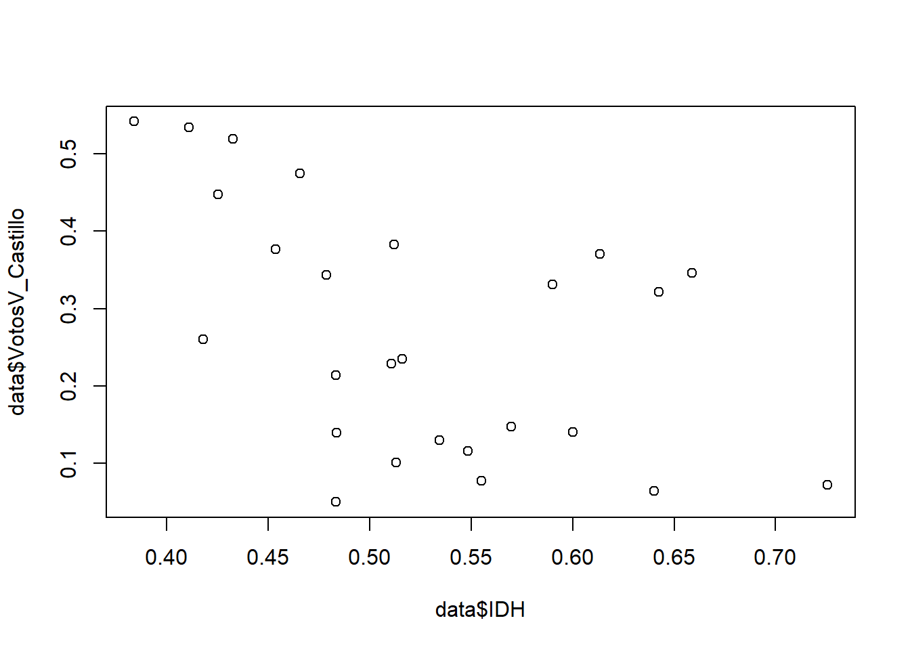
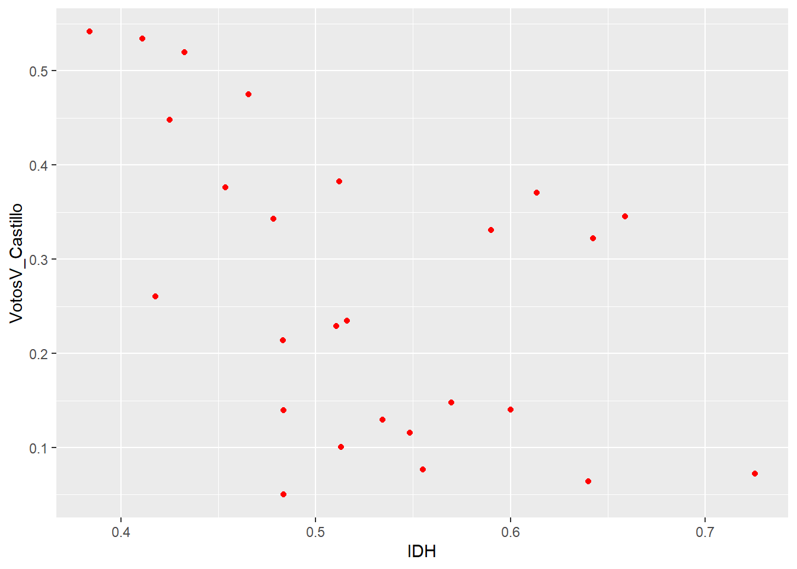
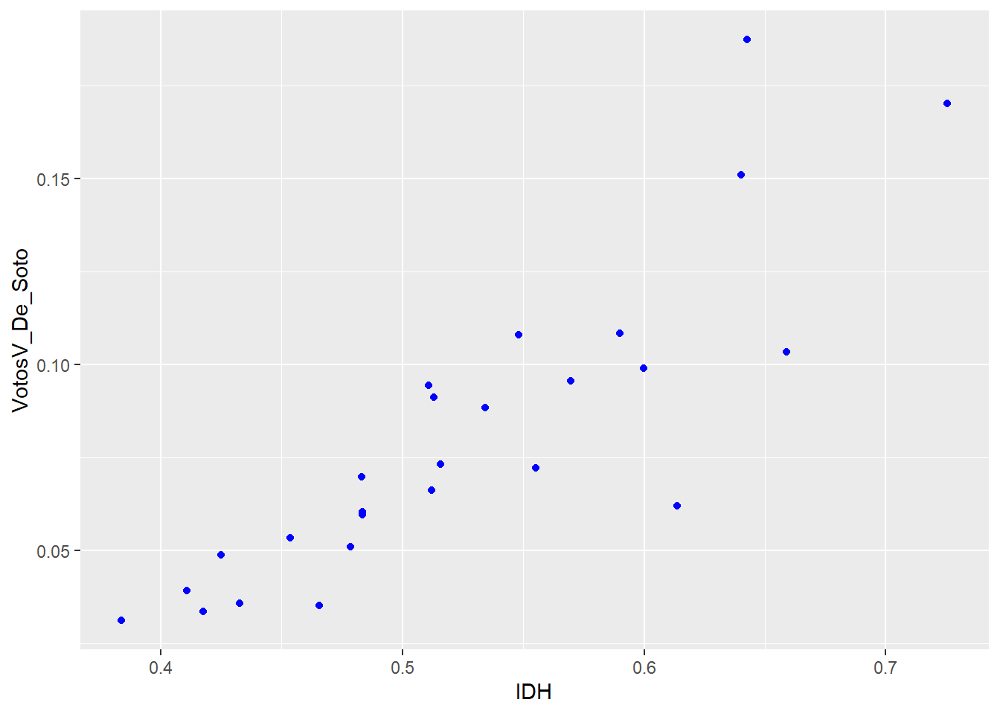

#setwd(" ")
library("rio")
data <- import("./data/s10/PVotos_CirElectoral_idh.xlsx")10 Correlación
Abrir la base de datos
Importa la base de datos a R. Recuerda que si termina en .dta proviene de stata, si termina con .xslx proviene de excel
10.0.0.1 Más información del paquete rio en el siguiente link: https://www.rdocumentation.org/packages/rio/versions/0.5.16
names(data) [1] "Distrito.electoral" "IDH" "Evida"
[4] "EduCom" "Aeduca" "IngresoPer"
[7] "VotosV_Castillo" "VotosV_Keiko" "VotosV_Aliaga"
[10] "VotosV_De_Soto" "VotosV_Mendoza" "Votos_no_validos" 10.0.0.2 Realizo la prueba de normalidad para definir si empleo Pearson o Spearman . Recordar que cuando el número de casos es menor a 121 , utilizo la prueba de Spearman.
la H0 de la prueba de normalidad: HAY NORMALIDAD
# Hipótesis de normalidad: la variable se distribuye normalmente
library(nortest)
shapiro.test(data$IDH)
Shapiro-Wilk normality test
data: data$IDH
W = 0.97142, p-value = 0.6605shapiro.test(data$VotosV_Castillo)
Shapiro-Wilk normality test
data: data$VotosV_Castillo
W = 0.92945, p-value = 0.07519shapiro.test(data$VotosV_De_Soto)
Shapiro-Wilk normality test
data: data$VotosV_De_Soto
W = 0.89647, p-value = 0.01307IDH
Con respecto a la prueba de normalidad shapiro wilk de la variable IDH, el p-value (0.6605) es mayor a 0.05, por tanto, aceptamos la H0 y concluimos que la variable edad presenta una distribución normal.
- Castillo
Con respecto a la prueba de normalidad shapiro wilk de la variable (VotosV_Castillo), el p-value (0.07519) es mayor a 0.05, por tanto, aceptamos la H0 y concluimos que la variable edad presenta una distribución normal.
- De Doto
Con respecto a la prueba de normalidad Kolmogorov smirnov de la variable edad, el p-value (0.01307) es menor a 0.05, por tanto, rechazamos la H0 y concluimos que la variable (VotosV_De_Soto) no presenta una distribución normal.
10.0.1 Prueba de correlación (EL MéTODO SE PRECISA EN LA PRUEBA DE CORRELACION)
EN CASTILLO, LA HO: NO EXISTE CORRELACION
-> CORT TEST - VARIABLE X - VARIABLE Y - EL METODO
cor.test(data$IDH, data$VotosV_Castillo, method = c("pearson"))
Pearson's product-moment correlation
data: data$IDH and data$VotosV_Castillo
t = -2.8874, df = 24, p-value = 0.008096
alternative hypothesis: true correlation is not equal to 0
95 percent confidence interval:
-0.7479941 -0.1498866
sample estimates:
cor
-0.5077587 #INTERPRETACIÓN: + Al revisar el P-value (0.008096), el cual es menor a 0.05, rechazamos la H0 y, por tanto, aceptamos la H1. A un 95% del nivel de confianza, sí parece existir una relación entre las variables IDH Y EL PORCENTAJE DE VOTO A PEDRO CASTILLO.
–> O HAY EVIDENCIA ESTADISTICA SUFICIEnTE PARA AFIRMAR O NO LA HAY PARA NEGAR LA RELACION.
El Coeficiente de Parson (COR) es de 0.5077587 (50%).
Por tanto, se trata de una correlación negativa; es decir, la relación es inversa: a medida de que el IDH aumenta, hay menor porcentaje de voto a Castillo.
Además, se trata de una correlación que es grande En efecto, según el criterio de Cohen, la correlación se encuentra en el rango entre 0.5 y 1.0.
Acá reflexionar respecto a las afirmaciones:
- POR EJEMPLO: LAS PERSONAS QUE TENGAN LOS SERIVICOS BÁSICOS CUBIERTOS (BUEN IDH), REGISTRARON MENOR POSIBLIDAD QUE VOTEN POR UN CANDIDATO OUTSIDER Y CON UNA AGENDA RADICAL. REPRESENTANTES NUEVOS. VOTO ANTISISTEMA, NO EN LA NORMA.
PROFUNDIZAR QUÉ PASA EN ESAS REGIONES QUE VOTARON ASÍ.
10.1 VER MÁS ALLÁ DE LO EVIDENTE
STORY TELLING –> IMPORTANTE EN CÓMO COMUNICO LA EVIDENCIA ESTADISTICA. MANEJAR UNA ARGUMETNACIÓN DE INTERPRETACIÓN DE LOS DATOS INICIAR UNA DISCUSIÓN. CONTRUBUIR A LA ACADEMIA
- AHORA CON DE SOTO:
cor.test(data$IDH, data$VotosV_De_Soto, method = c("spearman"))
Spearman's rank correlation rho
data: data$IDH and data$VotosV_De_Soto
S = 296, p-value = 1.539e-06
alternative hypothesis: true rho is not equal to 0
sample estimates:
rho
0.8988034 #INTERPRETACIÓN:
Al revisar el P-value (1.539e-06), el cual es menor a 0.05, rechazamos la H0 y, por tanto, aceptamos la H1. A un 95% del nivel de confianza, sí parece existir una relación entre las variables IDH Y el porcentaje de voto a De Soto.
El Coeficiente de Spearman (RHO es de 0.8988034 (89%).
Por tanto, se trata de una correlación positiva; es decir, la relación es directa: a medida de que el IDH aumenta, hay mayor porcentaje de voto a Castillo.
Además, se trata de una correlación que es grande. En efecto, según el criterio de Cohen, la correlación se encuentra en el rango entre 0.5 y 1.0.
10.2 Gráfico de dispersión
10.2.1 A través del gráfico de dispersión puedo percibir el sentido de la relación
usualmente eje X: variables que suceden primero (VARIABLES INDEPENDIENTES)
- IDH - Castillo
plot(data$IDH, data$VotosV_Castillo) #gráfico básico de R
#OTRA FORMA DE CREAR EL GRÁFICO, PERO MÁS BELLO:
library(ggplot2)
ggplot(data, aes(x = IDH, y = VotosV_Castillo)) + geom_point(colour = "red")
RELACIÓN QUE PARECIERA SER INVERSA (MENOS IDH, MAYOR VOTO POR CASTILLO)
- IDH - De Soto
library(ggplot2)
ggplot(data, aes(x = IDH, y = VotosV_De_Soto)) + geom_point(colour = "blue")
EN DE SOTO SE DA UNA RELACION FUERTE Y DIRECTA (+IDH, +REGIONES VOTAN) SENTIDO: POSITIVO
10.3 OTRO TEMA:
RECORDAR DOS FORMAS PARA RECODIFICAR: USANDO LA MISMA BASE, POR EJEMPLO:
- FORMA: UNO POR UNO
str(data$Distrito.electoral) chr [1:26] "Amazonas" "Ancash" "Apurimac" "Arequipa" "Ayacucho" ...OJO, ESTA VARIABLE ESTÁ EN chr (CONVERTIR A NUMERICA)
Costa = 1 Sierra = 2 Selva = 3
# AQUÍ TAMBIÉN PODEMOS COLOCAR 1 en LUGAR DE SELVA:
data$region[data$Distrito.electoral == 'Amazonas'] = 'Selva'
data$region[data$Distrito.electoral == 'Ancash'] = 'Sierra'
data$region[data$Distrito.electoral == 'Apurimac'] = 'Sierra'table(data$region)
Selva Sierra
1 2 - forma: USANDO RECODE
library(car)
data$region2 = recode(data$Distrito.electoral,
"'Amazonas' = 'Selva'; 'Ancash' = 'Sierra'")table(data$region2)
Apurimac Arequipa Ayacucho Cajamarca Callao
1 1 1 1 1
Cusco Huancavelica Huanuco Ica Junin
1 1 1 1 1
La_Libertad Lambayeque Lima_metro Lima_provincias Loreto
1 1 1 1 1
Madre_de_Dios Moquegua Pasco Piura Puno
1 1 1 1 1
San_Martin Selva Sierra Tacna Tumbes
1 1 1 1 1
Ucayali
1 AQUÍ, FALTA DEFINIR (SE HACE UN POR UNO)